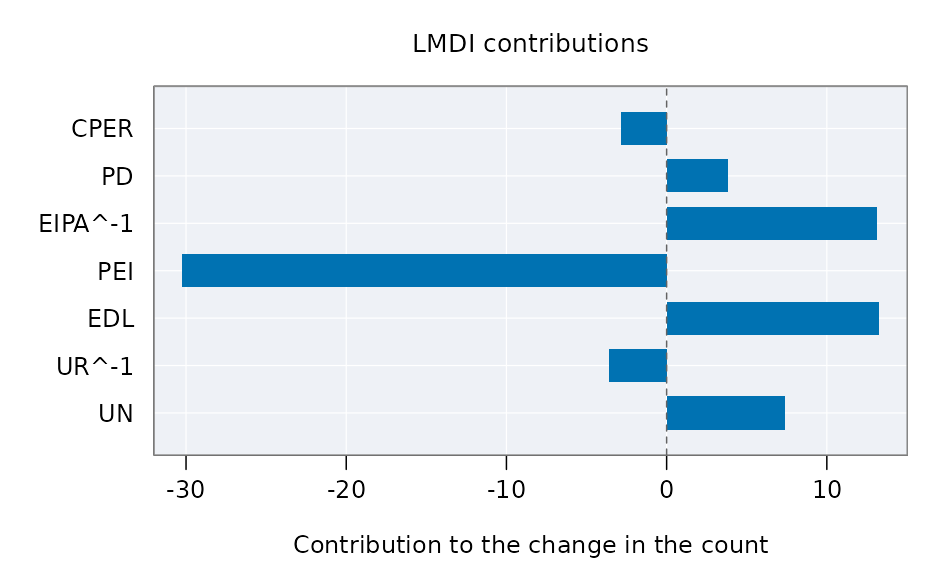
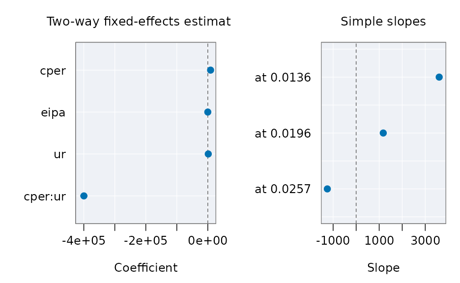
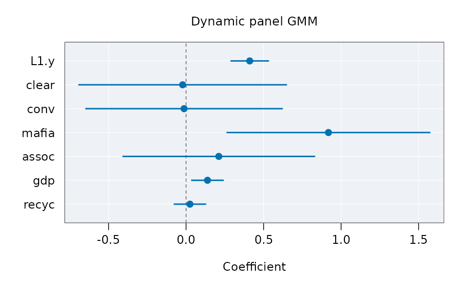
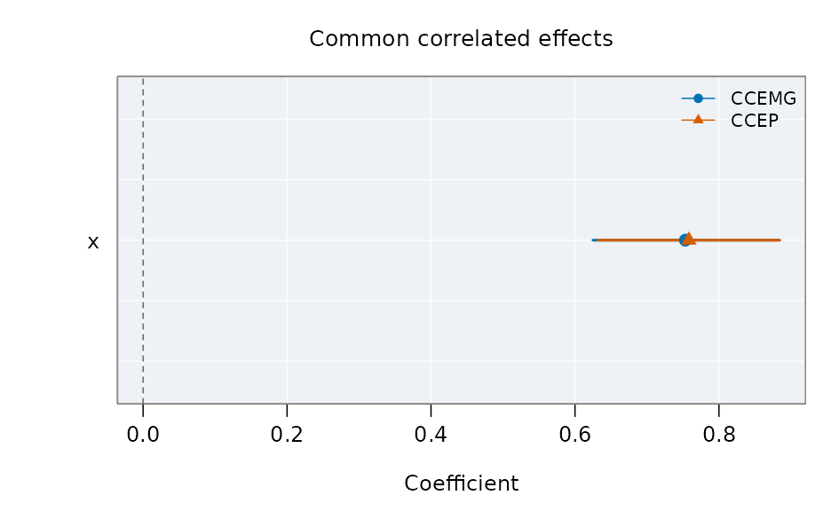

Environmental crime, panels and search and rescue
Source:vignettes/environmental-crime-and-rescue.Rmd
environmental-crime-and-rescue.RmdPanel models and tests used for environmental crime, and the search theory behind a search-and-rescue plan.
Each section is one help page: what the function is for, the example
of its help page as it runs, and the plot of its result where the
package draws one. ?name gives the arguments and the value
in full.
Environmental crime
LMDI decomposition of a count over the factors of a Kaya identity
lmdix(): How much of a change in recorded environmental
offences (pollution cases, waste violations) between two years, or of a
region’s gap to a reference region, is owed to each factor of an
identity that multiplies out to the count: the additive log-mean Divisia
index (LMDI) decomposition, temporal and spatial, as Duan et al. (2026,
eqs 1-5, pp. 8-9) apply it to crimes of polluting the environment in 30
Chinese provinces, 2016-2023.
# six provinces over four years: cases, population (millions), area
# (1000 km2), emissions (1000 t), GDP (billions) and the unemployed
# (millions), simulated
set.seed(1)
d <- expand.grid(year = c(2016, 2018, 2020, 2023), prov = LETTERS[1:6])
i <- match(d$prov, LETTERS)
d$P <- 10 * i * (1 + 0.01 * (d$year - 2016))
d$S <- 50 + 20 * i
d$W <- 30 * i * (1 - 0.03 * (d$year - 2016))
d$GDP <- 40 * i * (1 + 0.05 * (d$year - 2016))
d$UN <- 0.3 * i * (1 + 0.02 * (d$year - 2016))
d$cases <- rpois(24, 2 * i + 8 * (d$year == 2018))
q <- d[c("P", "S", "W", "GDP", "P", "UN")]
f <- c("CPER", "PD", "EIPA^-1", "PEI", "EDL", "UR^-1", "UN")
r <- lmdix(d$cases, q, d$prov, d$year, at = c(2016, 2018, 2020, 2023),
fnm = f)
r
#> lmdix: time decomposition, 18 rows, 7 factors
#> contributions summed over the rows decomposed:
#> dy CPER PD EIPA^-1 PEI EDL UR^-1 UN
#> 1.000000 -2.821646 3.821646 13.156108 -30.253445 13.275691 -3.597145 7.418791
# the gap of each province to the average province, by year
lmdix(d$cases, q, d$prov, d$year, type = "space", fnm = f)$dec
#> unit time ref y dy CPER PD EIPA^-1 PEI
#> 1 A 2016 6.833333 1 -5.8333333 -2.0307857 -2.1665160 2.1665160 0.000000e+00
#> 2 B 2016 6.833333 7 0.1666667 4.0371552 -1.8807839 1.8807839 0.000000e+00
#> 3 C 2016 6.833333 4 -2.8333333 -2.0177490 -0.3552223 0.3552223 0.000000e+00
#> 4 D 2016 6.833333 10 3.1666667 2.0561626 0.4448347 -0.4448347 0.000000e+00
#> 5 E 2016 6.833333 7 0.1666667 -2.3002157 0.9235474 -0.9235474 0.000000e+00
#> 6 F 2016 6.833333 12 5.1666667 0.2211070 1.7496734 -1.7496734 0.000000e+00
#> 7 A 2018 15.166667 8 -7.1666667 6.8691582 -7.9969646 7.9969646 0.000000e+00
#> 8 B 2018 15.166667 17 1.8333333 10.8240664 -4.3688607 4.3688607 0.000000e+00
#> 9 C 2018 15.166667 10 -5.1666667 -3.2545020 -0.8328306 0.8328306 0.000000e+00
#> 10 D 2018 15.166667 25 9.8333333 7.2060378 1.0524161 -1.0524161 0.000000e+00
#> 11 E 2018 15.166667 15 -0.1666667 -5.5464590 2.0140780 -2.0140780 0.000000e+00
#> 12 F 2018 15.166667 16 0.8333333 -7.5640268 2.9708745 -2.9708745 0.000000e+00
#> 13 A 2020 8.333333 4 -4.3333333 3.0629439 -4.2140571 4.2140571 -1.310945e-15
#> 14 B 2020 8.333333 5 -3.3333333 0.3183746 -1.7744719 1.7744719 -1.448926e-15
#> 15 C 2020 8.333333 8 -0.3333333 0.9253891 -0.5482282 0.5482282 0.000000e+00
#> 16 D 2020 8.333333 10 1.6666667 0.4460084 0.4889592 -0.4889592 -2.029789e-15
#> 17 E 2020 8.333333 9 0.6666667 -2.4229913 1.1567012 -1.1567012 0.000000e+00
#> 18 F 2020 8.333333 14 5.6666667 -0.2206696 2.0828614 -2.0828614 0.000000e+00
#> 19 A 2023 7.000000 1 -6.0000000 -2.1372431 -2.2008204 2.2008204 -3.423251e-16
#> 20 B 2023 7.000000 1 -6.0000000 -4.2744862 -0.8384777 0.8384777 -3.423251e-16
#> 21 C 2023 7.000000 6 -1.0000000 0.0000000 -0.4355433 0.4355433 -7.202194e-16
#> 22 D 2023 7.000000 12 5.0000000 3.7612963 0.4961877 -0.4961877 -1.029898e-15
#> 23 E 2023 7.000000 8 1.0000000 -1.6710943 1.0000000 -1.0000000 -1.662864e-15
#> 24 F 2023 7.000000 14 7.0000000 1.5567469 1.9257507 -1.9257507 -1.121199e-15
#> EDL UR^-1 UN
#> 1 0.000000e+00 6.739784e-16 -3.8025477
#> 2 0.000000e+00 1.535734e-15 -3.8704886
#> 3 0.000000e+00 1.174799e-15 -0.8155843
#> 4 0.000000e+00 1.846618e-15 1.1105041
#> 5 0.000000e+00 1.535734e-15 2.4668823
#> 6 0.000000e+00 2.037369e-15 4.9455597
#> 7 2.487764e-15 0.000000e+00 -14.0358248
#> 8 3.567347e-15 0.000000e+00 -8.9907330
#> 9 0.000000e+00 0.000000e+00 -1.9121647
#> 10 4.368836e-15 0.000000e+00 2.6272955
#> 11 3.349139e-15 0.000000e+00 5.3797923
#> 12 0.000000e+00 0.000000e+00 8.3973601
#> 13 -1.310945e-15 1.310945e-15 -7.3962773
#> 14 -1.448926e-15 1.448926e-15 -3.6517079
#> 15 -1.813112e-15 1.813112e-15 -1.2587224
#> 16 -2.029789e-15 2.029789e-15 1.2206583
#> 17 -1.923437e-15 1.923437e-15 3.0896580
#> 18 -2.425343e-15 2.425343e-15 5.8873362
#> 19 0.000000e+00 0.000000e+00 -3.8627569
#> 20 0.000000e+00 0.000000e+00 -1.7255138
#> 21 1.440439e-15 0.000000e+00 -1.0000000
#> 22 0.000000e+00 0.000000e+00 1.2387037
#> 23 1.662864e-15 -8.314322e-16 2.6710943
#> 24 2.242399e-15 0.000000e+00 5.4432531
plot(r)
Two-way fixed effects with an interaction, for counts of offences
fepnl(): The regression Duan et al. (2026, eqs 6-8,
pp. 9-11) use to check the drivers of recorded pollution crimes: the
count on continuous drivers and the product of two of them, with unit
and period fixed effects, errors clustered by unit, standardised
coefficients, variance inflation factors, the simple slopes of one
driver at values of the other (p. 23), and the Jarque-Bera test of the
residuals (p. 25).
# 30 provinces over 8 years: cases on the case rate, the unemployment
# rate and their product, simulated
set.seed(2)
d <- expand.grid(year = 2016:2023, prov = paste0("p", 1:30))
d$cper <- runif(240, 0.005, 0.04)
d$ur <- runif(240, 0.01, 0.03)
d$eipa <- rnorm(240, 5)
d$cases <- 50 + 9000 * d$cper + 1500 * d$ur - 4e5 * d$cper * d$ur +
rnorm(240, sd = 5)
r <- fepnl(d$cases, d[c("cper", "eipa", "ur")], d$prov, d$year,
int = c("cper", "ur"))
r
#> fepnl: 240 rows, 30 units, 8 periods, 30 clusters, R2 0.9929, within R2 0.9916
#> term est se lo hi t
#> cper 9.026466e+03 103.3399520 8.815113e+03 9.237820e+03 87.3473066
#> eipa 1.888576e-01 0.3811923 -5.907681e-01 9.684834e-01 0.4954393
#> ur 1.534870e+03 106.8914777 1.316252e+03 1.753488e+03 14.3591418
#> cper:ur -3.997308e+05 4706.6920055 -4.093571e+05 -3.901046e+05 -84.9281898
#> p beta vif
#> 1.128269e-36 1.785147290 11.771218
#> 6.240236e-01 0.003512598 1.001826
#> 1.030284e-14 0.174856822 5.533638
#> 2.539870e-36 -1.866182026 15.657058
#> simple slopes:
#> at slope se lo hi t p
#> 0.01356247 3605.130 43.35037 3516.468 3693.791 83.16260 4.659674e-36
#> 0.01963659 1177.117 24.09165 1127.844 1226.390 48.85996 2.082308e-29
#> 0.02571071 -1250.895 30.26917 -1312.803 -1188.988 -41.32572 2.504726e-27
#> Jarque-Bera of the residuals 1.386, p 0.5002
r$slopes
#> at slope se lo hi t p
#> 1 0.01356247 3605.130 43.35037 3516.468 3693.791 83.16260 4.659674e-36
#> 2 0.01963659 1177.117 24.09165 1127.844 1226.390 48.85996 2.082308e-29
#> 3 0.02571071 -1250.895 30.26917 -1312.803 -1188.988 -41.32572 2.504726e-27
plot(r)
Pesaran’s CD test of cross-sectional dependence in a panel
pcdtst(): Whether the residuals (or any variable) of a
unit-by-period panel move together across units, the test Andreatta et
al. (2023, p. 1376) run on the residuals of their waste-crime models
before deciding a spatial model is not needed. For each pair of units
the correlation rho_ab of their values over the
T_ab periods they share, about the means over those
periods; CD = sum sqrt(T_ab) rho_ab / sqrt(m) over the m
pairs, which for a balanced panel of N units and
T periods is sqrt(2 T / (N (N - 1))) sum rho_ab, standard
normal under no dependence. Pairs that share fewer than two periods, or
along which a unit does not vary, are left out. This is the statistic of
plm::pcdtest(test = "cd"). For dependence between
neighbours rather than across all pairs, use gmoran() on
each period’s residuals, as Andreatta et al. also do.
set.seed(3)
d <- expand.grid(year = 2009:2017, prov = paste0("p", 1:20))
common <- rnorm(9)
d$e <- rnorm(180) + 0.8 * common[d$year - 2008]
pcdtst(d$e, d$prov, d$year)
#> cd p rho absrho pairs units
#> 9.390043e+00 5.997592e-21 2.270751e-01 3.385986e-01 1.900000e+02 2.000000e+01
#> periods
#> 9.000000e+00
# the residuals of a two-way fit
d$x <- rnorm(180)
d$y <- d$x + d$e
pcdtst(fepnl(d$y, d$x, d$prov, d$year)$resid, d$prov, d$year)
#> cd p rho absrho pairs units
#> -2.14401630 0.03203158 -0.05184776 0.29758687 190.00000000 20.00000000
#> periods
#> 9.00000000Difference and system GMM for dynamic panels
gmmpnl(): The generalized method of moments estimators
of a dynamic panel with unit effects: the difference estimator of
Arellano and Bond (1991) and the system estimator of Arellano and Bover
(1995) and Blundell and Bond (1998), with the instrument matrix built as
Roodman (2009) describes it. Andreatta et al. (2023, pp. 1372-1374,
table 3) fit the logged rate of waste crime in Italian provinces this
way: one-step system GMM with robust errors, time effects, the lagged
rate and four enforcement and organised-crime variables instrumented
GMM-style by their second and third lags, the AR(1) and AR(2) tests, the
Hansen test, the Hansen test of the differenced equations alone and the
difference-in-Hansen test of the level instruments, with no more
instruments than provinces.
# 60 provinces over 8 years: a logged rate with persistence 0.5 and one
# endogenous driver, simulated
set.seed(7)
d <- expand.grid(year = 2010:2017, prov = paste0("p", 1:60))
u <- rnorm(60)[as.integer(substring(d$prov, 2))]
d$enf <- u + rnorm(480)
d$y <- 0
for (i in which(d$year > 2010)) {
d$y[i] <- 0.5 * d$y[i - 1] + 0.3 * d$enf[i] + u[i] + rnorm(1)
}
r <- gmmpnl(d$y, d["enf"], d$prov, d$year, gmm = "enf", lagmax = 3,
collapse = TRUE)
r
#> gmmpnl: system GMM (fd), step 1, 420 rows, 60 groups, 13 instruments
#> robust variance
#> term est se z p lo hi
#> L1.y 0.63565326 0.06952086 9.14334550 6.054957e-20 0.4993949 0.7719116
#> enf 0.92497344 0.19159312 4.82780094 1.380490e-06 0.5494578 1.3004891
#> (const) -0.06954309 0.13468780 -0.51632809 6.056253e-01 -0.3335263 0.1944401
#> t2011 0.26161153 0.23231848 1.12609006 2.601274e-01 -0.1937243 0.7169474
#> t2012 -0.01923081 0.19584762 -0.09819271 9.217793e-01 -0.4030851 0.3646235
#> t2013 -0.03271092 0.19746408 -0.16565506 8.684284e-01 -0.4197334 0.3543116
#> t2014 0.19530957 0.21204614 0.92107109 3.570133e-01 -0.2202932 0.6109124
#> t2015 0.04273779 0.21878075 0.19534529 8.451226e-01 -0.3860646 0.4715402
#> t2016 0.08698987 0.18530371 0.46944485 6.387517e-01 -0.2761987 0.4501785
#> Wald chi2(8) = 1275.2, p 5.394e-270
#> Wald chi2(8) = 1560.9, p 0 (every coefficient, as xtabond2 prints it)
#> test stat df p
#> AR(1) -5.0629586 NA 4.127995e-07
#> AR(2) 0.6919913 NA 4.889428e-01
#> Sargan 8.8777291 4 6.422940e-02
#> Hansen 9.3189947 4 5.360236e-02
#> Hansen without level GMM 0.6621633 2 7.181465e-01
#> Difference-in-Hansen 8.6568314 2 1.318843e-02
r$tests
#> test stat df p
#> 1 AR(1) -5.0629586 NA 4.127995e-07
#> 2 AR(2) 0.6919913 NA 4.889428e-01
#> 3 Sargan 8.8777291 4 6.422940e-02
#> 4 Hansen 9.3189947 4 5.360236e-02
#> 5 Hansen without level GMM 0.6621633 2 7.181465e-01
#> 6 Difference-in-Hansen 8.6568314 2 1.318843e-02
# the specification of Andreatta et al. (2023, table 3) on simulated
# data: the lagged rate and four drivers GMM-style by their second and
# third lags, collapsed so that the instruments stay below the
# provinces, two exogenous drivers, time effects, one-step robust
# errors with small-sample adjustments
set.seed(23)
np <- 102
d <- expand.grid(year = 2010:2019, prov = paste0("p", 1:np))
u <- rnorm(np)[as.integer(substring(d$prov, 2))]
n <- nrow(d)
for (v in c("clear", "conv", "mafia", "assoc")) d[[v]] <- u + rnorm(n)
d$gdp <- rnorm(n)
d$recyc <- rnorm(n)
d$wcrim <- 0
for (i in which(d$year > 2010)) {
d$wcrim[i] <- 0.4 * d$wcrim[i - 1] - 0.1 * d$clear[i] +
0.2 * d$mafia[i] + 0.1 * d$gdp[i] + u[i] + rnorm(1)
}
en <- c("clear", "conv", "mafia", "assoc")
a <- gmmpnl(d$wcrim, d[c(en, "gdp", "recyc")], d$prov, d$year, gmm = en,
lagmin = 2, lagmax = 3, collapse = TRUE, small = TRUE)
a$tests
#> test stat df p
#> 1 AR(1) -4.694829 NA 0.0000026683
#> 2 AR(2) 1.432563 NA 0.1519828001
#> 3 Sargan 9.750661 10 0.4626343573
#> 4 Hansen 11.268943 10 0.3369524384
#> 5 Hansen without level GMM 1.868157 5 0.8670707506
#> 6 Difference-in-Hansen 9.400786 5 0.0941069902
a$fit$inst < a$fit$groups
#> [1] TRUE
# the static model's serial correlation and the dynamic residuals'
# cross-sectional dependence
wsctst(d$wcrim, d[c(en, "gdp", "recyc")], d$prov, d$year)
#> wsctst: Wooldridge test of serial correlation, F(1, 101) = 73.206, p 1.336e-13
#> lagged residual -0.2747 (se 0.02634; -0.5 without correlation), 816 pairs
k <- !is.na(a$resid)
pcdtst(a$resid[k], d$prov[k], d$year[k])
#> cd p rho absrho pairs units
#> -2.063590e+00 3.905661e-02 -9.584211e-03 2.965807e-01 5.151000e+03 1.020000e+02
#> periods
#> 9.000000e+00
plot(a)
Wooldridge’s test for serial correlation in a panel
wsctst(): Whether the idiosyncratic errors of a linear
panel model with unit effects are serially correlated, by the test
Wooldridge (2002) derives and Drukker (2003) sets out and evaluates, the
test Andreatta et al. (2023, p. 1373) run on the residuals of their
static models before choosing a dynamic one. The first differences of
y are regressed on those of x, without a
constant, which differencing removes (Drukker 2003, sec. 2); without
serial correlation the residuals e_it of consecutive
differences correlate at -0.5, so e_it is regressed on
e_i,t-1 with the variance clustered by unit, and the coefficient is
tested against -0.5: F = ((coef + 0.5) / se)^2 on 1 and
G - 1 degrees of freedom, G the units with a
pair. A difference needs the period before, so a gap removes two
differences and the pairs that use them. Drukker does not say whether
the second regression has a constant; cons = FALSE (the
default) leaves it out, since the residuals of the first have none to
absorb.
set.seed(8)
d <- expand.grid(year = 1:8, prov = paste0("p", 1:40))
d$x <- rnorm(320)
d$e <- 0
for (i in which(d$year > 1)) d$e[i] <- 0.6 * d$e[i - 1] + rnorm(1)
d$y <- d$x + rnorm(40)[as.integer(substring(d$prov, 2))] + d$e
wsctst(d$y, d["x"], d$prov, d$year)
#> wsctst: Wooldridge test of serial correlation, F(1, 39) = 5.1486, p 0.02888
#> lagged residual -0.3814 (se 0.05228; -0.5 without correlation), 240 pairsCommon correlated effects for panels with unobserved common factors
ccepnl(): The common correlated effects estimators of
Pesaran (2006) for a panel whose errors hold unobserved common factors
with unit-specific loadings, correlated with the regressors: the
dependent variable and the regressors averaged across units in each
period (with the weights w) are added to each unit’s
regression, with the observed common factors d_t (a
constant, with cons = TRUE, and the columns of
fac). With H = (D, ybar_w, Xbar_w) and M = I - H (H’H)^- H’
(eq 15, a generalized inverse), the unit estimates are b_i = (X_i’M
X_i)^-1 X_i’M y_i. The mean group estimator CCEMG is their
mean (eq 53), with the nonparametric variance sum (b_i - b_MG)(b_i -
b_MG)’ / (N (N - 1)) (eq 58). The pooled estimator CCEP is
(sum w_i X_i’M X_i)^-1 sum w_i X_i’M y_i, the pooling weights equal to
the averaging weights as Theorem 3 requires, with the variance of eqs
67-69, sum w_i^2 Psi^-1 R Psi^-1, Psi = sum w_i X_i’M X_i / T and R =
sum wt_i^2 (X_i’M X_i / T) (b_i - b_MG)(b_i - b_MG)’ (X_i’M X_i / T) /
(N - 1), wt_i = w_i / sqrt(mean(w^2)). Inference is
normal.
# 30 provinces over 12 years, one unobserved factor in y and x
set.seed(9)
d <- expand.grid(year = 1:12, prov = paste0("p", 1:30))
f <- rnorm(12)[d$year]
g <- rnorm(30, 1)[as.integer(substring(d$prov, 2))]
d$x <- g * f + rnorm(360)
d$y <- 1 + 0.7 * d$x + g * f + rnorm(360)
r <- ccepnl(d$y, d["x"], d$prov, d$year)
r
#> ccepnl: common correlated effects, 30 units, 12 periods
#> mean group (CCEMG):
#> term est se z p lo hi
#> x 0.7534011 0.06556476 11.49095 1.464985e-30 0.6248965 0.8819056
#> pooled (CCEP):
#> term est se z p lo hi
#> x 0.7581987 0.06456047 11.74401 7.580526e-32 0.6316625 0.8847349
#> heterogeneity bias of CCEP: chi2(1) = 0.0165, p 0.898
r$nfac
#> er thr avg
#> 1 2 2
# a dynamic panel: y depends on its lag; jackknife-corrected mean group
set.seed(10)
tt <- 40
d <- expand.grid(year = 1:tt, prov = paste0("p", 1:40))
f <- rnorm(tt)[d$year]
g <- rnorm(40, 1)[as.integer(substring(d$prov, 2))]
d$x <- g * f + rnorm(nrow(d))
d$y <- 0
for (i in which(d$year > 1)) {
d$y[i] <- 0.5 * d$y[i - 1] + 0.7 * d$x[i] + g[i] * f[i] + rnorm(1)
}
ccepnl(d$y, d["x"], d$prov, d$year, ylag = 1, bias = "jack")
#> ccepnl: common correlated effects, 40 units, 40 periods, 1 lags of y, 3 of the averages
#> mean group (CCEMG, jack):
#> term est se z p lo hi
#> L1.y 0.5946119 0.04214017 14.11033 3.280167e-45 0.5120187 0.6772051
#> x 0.6781777 0.06129760 11.06369 1.881911e-28 0.5580366 0.7983187
plot(r)
Search and rescue
Search theory for search and rescue planning
ltrlrng(), swpwdth(),
srchpod(), pswppod() and others: The
quantities a search and rescue planner works with (Koopman’s search
theory, as used in the U.S. Coast Guard and IAMSAR planning
methods):
# inverse cube detection 0.5, 1 and 2 sweep widths off the track
ltrlrng(c(0.5, 1, 2), W = 1)
#> Lateral range curve: inverse cube model, sweep width W = 1
#> range pod
#> 0.5 0.2726227
#> 1.0 0.0764935
#> 2.0 0.0196978
#> pod: the chance of detecting the object at that distance from the track;
#> the sweep width W is the area under this curve.
# the area under the curve is the sweep width
xs <- seq(-200, 200, by = 0.01)
swpwdth(xs, ltrlrng(xs, W = 1, model = "definite"))
#> [1] 1.01
# POD at coverage 1 under the three models
srchpod(1)
#> Probability of detection: random search model
#> coverage pod
#> 1 0.632121
srchpod(c(0.5, 1, 2), model = "invcube")
#> Probability of detection: inverse cube model
#> coverage pod
#> 0.5 0.469116
#> 1.0 0.789909
#> 2.0 0.987811
# a parallel sweep at spacing 1.3 W, without and with navigation error
pswppod(1, 1.3)
#> [1] 0.6649981
pswppod(1, 1.3, navsd = 0.3, npts = 201)
#> [1] 0.6460403
# three areas searched once; the containment after finding nothing
srchscs(c(0.5, 0.3, 0.2), c(0.8, 0.5, 0))
#> Probability of success 0.55 after 1 search over 3 areas
#> area poc cumpod posarea pocupd
#> 1 0.5 0.8 0.40 0.2222
#> 2 0.3 0.5 0.15 0.3333
#> 3 0.2 0.0 0.00 0.4444
# a point datum on a 10 x 10 grid, and the best use of 30 units of track
m <- datumpmap(seq(-5, 5), seq(-5, 5), sigma = 2)
a <- opteffort(m, W = 1, effort = 30)
a$pos
#> [1] 0.4520985
optcrcsrch(sigma = 2, W = 1, effort = 30)$pos
#> [1] 0.4571532
# a simulated search, step by step: a last known position 2 km east and
# 3 km north of the base, known to about 1.5 km, on a grid of 1 km cells
own <- datumpmap(seq(-3, 7), seq(-2, 8), center = c(2, 3), sigma = 1.5)
own
#> Datum probability map (point datum), sigma 1.5: 10 x 10 cells (x by y); 0.2% of the probability lies outside the grid
#> The most likely cells:
#> x y poc
#> 1.5 2.5 0.06126
#> 1.5 3.5 0.06126
#> 2.5 2.5 0.06126
#> 2.5 3.5 0.06126
#> 0.5 2.5 0.03992
# 0.6 km sweep width; 12 km of track walked in each of the four cells
# round the position, none elsewhere
walked <- matrix(0, nrow(own$poc), ncol(own$poc))
walked[5:6, 5:6] <- 12
pd <- srchpod(W = 0.6, effort = walked, area = own, model = "invcube")
# the chance that the search found the person, and the map if it did not
day1 <- srchscs(own, pd)
day1
#> Probability of success 0.245 after 1 search over 100 areas
#> area poc cumpod posarea pocupd
#> 45 0.06126 1 0.06126 0.00000
#> 46 0.06126 1 0.06126 0.00000
#> 55 0.06126 1 0.06126 0.00000
#> 56 0.06126 1 0.06126 0.00000
#> 35 0.03992 0 0.00000 0.05287
#> 36 0.03992 0 0.00000 0.05287
#> 44 0.03992 0 0.00000 0.05287
#> 47 0.03992 0 0.00000 0.05287
#> 54 0.03992 0 0.00000 0.05287
#> 57 0.03992 0 0.00000 0.05287
#> 65 0.03992 0 0.00000 0.05287
#> 66 0.03992 0 0.00000 0.05287
#> 34 0.02601 0 0.00000 0.03445
#> 37 0.02601 0 0.00000 0.03445
#> 64 0.02601 0 0.00000 0.03445
#> 67 0.02601 0 0.00000 0.03445
#> 25 0.01694 0 0.00000 0.02244
#> 26 0.01694 0 0.00000 0.02244
#> 43 0.01694 0 0.00000 0.02244
#> 53 0.01694 0 0.00000 0.02244
#> The 20 most likely of 100 cells.
#> Map: 10 x 10 cells (x by y), updated in $map
# the best use of the next day's 40 km on what is left
opteffort(day1$map, W = 0.6, effort = 40)
#> Optimal allocation of effort: POS 0.5369 from effort 40 over 28 of 100 cells (W = 0.6)
#> cell poc effort coverage pod
#> 35 0.05287 2.551 1.5303 0.7835
#> 36 0.05287 2.551 1.5303 0.7835
#> 44 0.05287 2.551 1.5303 0.7835
#> 47 0.05287 2.551 1.5303 0.7835
#> 54 0.05287 2.551 1.5303 0.7835
#> 57 0.05287 2.551 1.5303 0.7835
#> 65 0.05287 2.551 1.5303 0.7835
#> 66 0.05287 2.551 1.5303 0.7835
#> 34 0.03445 1.837 1.1021 0.6678
#> 37 0.03445 1.837 1.1021 0.6678
#> 64 0.03445 1.837 1.1021 0.6678
#> 67 0.03445 1.837 1.1021 0.6678
#> 25 0.02244 1.122 0.6735 0.4901
#> 26 0.02244 1.122 0.6735 0.4901
#> 43 0.02244 1.122 0.6735 0.4901
#> 53 0.02244 1.122 0.6735 0.4901
#> 48 0.02244 1.122 0.6735 0.4901
#> 58 0.02244 1.122 0.6735 0.4901
#> 75 0.02244 1.122 0.6735 0.4901
#> 76 0.02244 1.122 0.6735 0.4901
#> ... and 8 more cells
# inputs that cannot be right are refused
try(ltrlrng(1, W = -1))
#> Error : ltrlrng: `W` must be positive.
try(srchpod(1, W = 0.6))
#> Error : srchpod: give either `coverage` or `W`, `effort` and `area`, not both.
try(srchscs(c(0.8, 0.8), c(0.5, 0.5)))
#> Error : srchscs: `poc` must sum to at most 1, got 1.6.The optimal search square for a circular normal datum
optsqr(): For a point datum with a circular normal
distribution of position error, the square centred on the datum that a
given effort, spread evenly, should cover to make the probability of
success as large as possible (Frost 1996, chapter 6). With several
efforts, each search is optimized in turn against the distribution as
earlier unsuccessful searches left it.
# Frost's example: an effort of 4 E^2 on a point datum
optsqr(4)
#> Optimal square searches: 1, total effort 4, chance found by the end 0.4578
#> search effort releff cumeff factor side poc coverage pod pos cumpos
#> 1 4 4 4 1.021 2.042 0.594 0.9592 0.7707 0.4578 0.4578
#> Each search covers the square (of side 'side') that gives it the best chance of
#> success after the searches before it. poc is the chance the object is in that
#> square, pod the chance of detecting it there, pos their product and cumpos
#> the running chance it has been found.
# poor search conditions: the random search curve
optsqr(4, model = "random")
#> Optimal square searches: 1, total effort 4, chance found by the end 0.3664
#> search effort releff cumeff factor side poc coverage pod pos cumpos
#> 1 4 4 4 1.028 2.055 0.5986 0.947 0.6121 0.3664 0.3664
#> Each search covers the square (of side 'side') that gives it the best chance of
#> success after the searches before it. poc is the chance the object is in that
#> square, pod the chance of detecting it there, pos their product and cumpos
#> the running chance it has been found.
# three searches in a row, each optimal for what the last ones left
optsqr(c(4, 4, 8), E = 2)
#> Optimal square searches: 3, total effort 16, chance found by the end 0.419
#> search effort releff cumeff factor side poc coverage pod pos cumpos
#> 1 4 1 1 0.6432 2.573 0.3038 0.6043 0.5511 0.1674 0.1674
#> 2 4 1 2 0.9360 3.744 0.4382 0.2854 0.2794 0.1224 0.2694
#> 3 8 2 4 1.1183 4.473 0.5339 0.3998 0.3837 0.2049 0.4190
#> Each search covers the square (of side 'side') that gives it the best chance of
#> success after the searches before it. poc is the chance the object is in that
#> square, pod the chance of detecting it there, pos their product and cumpos
#> the running chance it has been found.
try(optsqr(-1))
#> Error : optsqr: `effort` must be positive.The figures of The Theory of Search
srchfig(): Lists the figures of Frost (1996), “The
Theory of Search: A Simplified Explanation”, with how each is computed
from the search theory functions with the book’s parameters, and one
line of R that computes a version of it from the reader’s own
numbers.
head(srchfig())
#> fig caption how
#> 1 3-1 Probability density distribution for a point datum with top view model
#> 2 3-2 Circle of radius one standard deviation and its circumscribed square model
#> 3 3-3 Circle of radius E and its circumscribed square model
#> 4 3-4 Probability map for a point datum model
#> 5 3-5 Circle of radius 1.1 E and its circumscribed square model
#> 6 3-6 Line datum: circles at the end points boxed in schematic
#> yours
#> 1 plot(datumpmap(seq(-4, 4, by = 0.25), seq(-4, 4, by = 0.25), center = c(0, 0), sigma = 1.5), view = "both")
#> 2 sum(datumpmap(c(-1.5, 1.5), c(-1.5, 1.5), sigma = 1.5)$poc)
#> 3 sum(datumpmap(c(-1, 1) * 1.177 * 1.5, c(-1, 1) * 1.177 * 1.5, sigma = 1.5)$poc)
#> 4 plot(datumpmap(c(-3, -1, 1, 3) * 1.77, c(-3, -1, 1, 3) * 1.77, sigma = 1.5), view = "cells")
#> 5 sum(datumpmap(c(-1, 1) * 1.295 * 1.5, c(-1, 1) * 1.295 * 1.5, sigma = 1.5)$poc)
#> 6 plot(datumpmap(seq(-4, 4, by = 0.25), seq(-4, 4, by = 0.25), "line", center = c(0, -2), end = c(0, 2), sigma = 1), view = "both")
srchfig("3-4")
#> fig caption how
#> 1 3-4 Probability map for a point datum model
#> yours
#> 1 plot(datumpmap(c(-3, -1, 1, 3) * 1.77, c(-3, -1, 1, 3) * 1.77, sigma = 1.5), view = "cells")
srchfig(5, 8)
#> fig caption how
#> 1 5-8 Inverse cube model
#> yours
#> 1 plot(srchpod(seq(0, 3, by = 0.1), "invcube"), models = c("invcube", "definite", "random"))
try(srchfig("9-9"))
#> Error : srchfig: `fig` must be one of the book's figures, 3-1, 3-2, 3-3, 3-4, 3-5, 3-6, 3-7, 3-8, 3-9, 3-10, 3-11, 3-12, 3-13, 3-14, 4-1, 4-2, 4-3, 4-4, 4-5, 4-6, 4-7, 5-1, 5-2, 5-3, 5-4, 5-5, 5-6, 5-7, 5-8, 5-9, 6-1, 6-2, 6-3, 6-4, 6-5, 6-6; got "9-9".